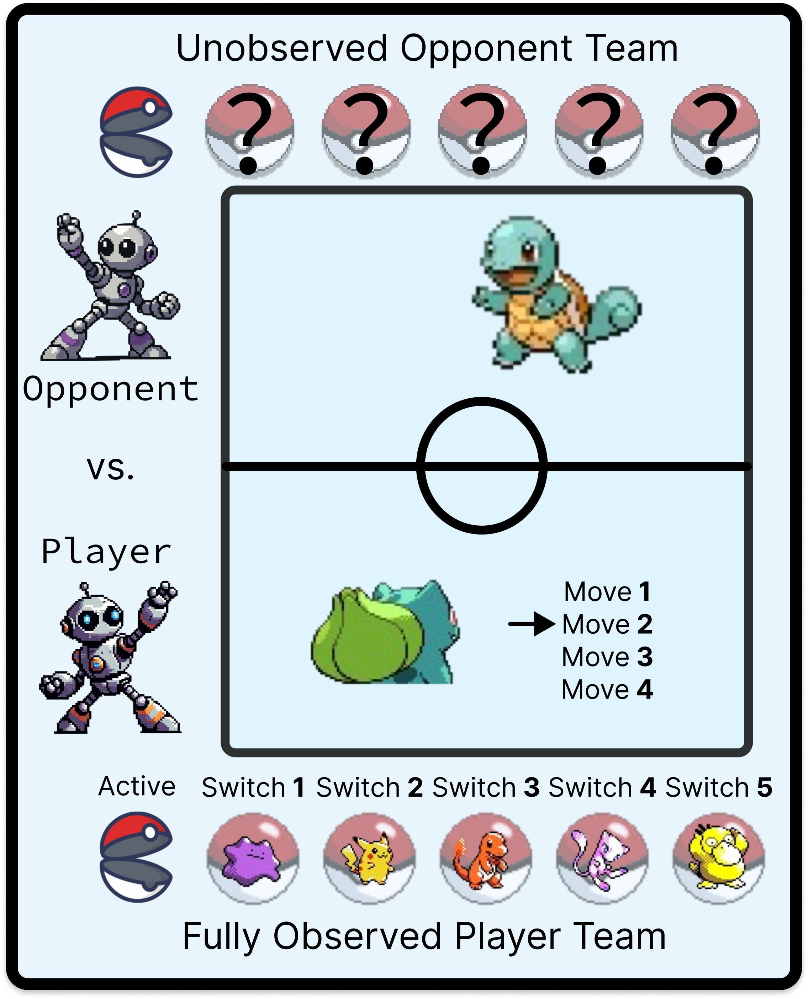
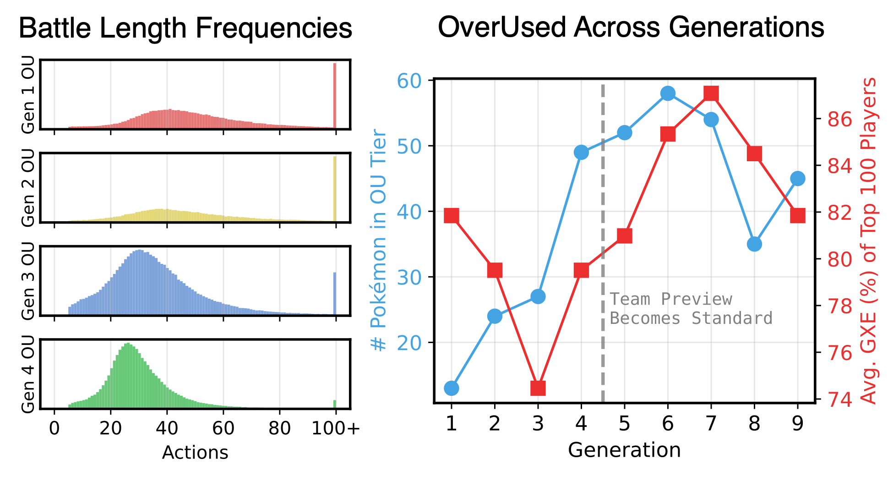

This is an introduction to Track 1 of the PokéAgent Challenge intended for readers who are interested in machine learning but new to Pokémon Showdown. We'll run through the main vocabulary you'll need to know and give some (slightly opinionated) thoughts on what matters and where new research might take us.
Competitive Pokémon turns the Pokémon franchise's turn-based combat mechanic into a standalone two-player strategy game. Players design teams of Pokémon and battle against an opponent. On each turn, they can choose to use a move from the Pokémon already on the field or switch to another member of their team. Moves can deal damage to the opponent, eventually causing it to faint, until the last player with active Pokémon wins.

As an AI benchmark, Pokémon is most defined by:
The best way to get a feel for the problem is to play a battle yourself! It takes under a minute to get into a match against bots on the PokéAgent Ladder. It's a fun way to play low-stakes battles against opponents who won't keep you waiting or talk trash when you lose :)
Alakazam
EVs: 252 HP / 252 Def / 252 SpA / 252 SpD / 252 Spe
IVs: 2 Atk
- Thunder Wave
- Seismic Toss
- Psychic
- Recover
Chansey
EVs: 252 HP / 252 Def / 252 SpA / 252 SpD / 252 Spe
IVs: 2 Atk
- Thunder Wave
- Ice Beam
- Thunderbolt
- Soft-Boiled
Gengar
- Hypnosis
- Thunderbolt
- Seismic Toss
- Explosion
Snorlax
- Body Slam
- Earthquake
- Hyper Beam
- Self-Destruct
Tauros
- Body Slam
- Earthquake
- Hyper Beam
- Blizzard
Starmie
EVs: 252 HP / 252 Def / 252 SpA / 252 SpD / 252 Spe
IVs: 2 Atk
- Thunder Wave
- Blizzard
- Psychic
- Recover
How to start a battle on the PokéAgent ladder
Competitive Pokémon might be the most vocabulary-intensive game ever made. There are a lot of Named Things™ to know about (there are more than 1,000 Pokémon, just for starters). The terminology can be a bit overwhelming, but remember that you don't need to learn to play... you just need to learn enough to build a bot that can learn to play for you. The starter resources use few (if any) Pokémon-specific heuristics and are aimed at an ML audience. However, there are a few vocabulary terms you'll need to know to follow their instructions and conversations on Discord:

The PokéAgent Challenge has leaderboards for Gen1OU and Gen9OU, which covers both ends of a few important trends:
Trend: Every generation adds Pokémon, moves, and other team design choices. Therefore, the number of available team compositions dramatically increases over the generations. The number of teams that are considered competitively viable generally increases too... but the tiering system keeps this more manageable.
AI Takeaways: Agents must generalize over more diverse team choices in later generations. Expect later generations to require more data and stronger representations to reach the same performance.
Trend: The latest generation (currently: Gen 9) is by far the most popular. There are more Gen 9 battles played per day than every other generation combined.
AI Takeaways: Available replay data conveniently increases alongside the previously mentioned demand for more data.
Trend: Offensive power has increased over time. There are more Pokémon that deal more damage to mismatches in team design. The average length of a battle drops sharply over the early generations, then mostly levels out.
AI Takeaways: Planning horizons decrease over generations, but it becomes harder to recover from mistakes (or bad luck). Search may be more useful in later gens.
Trend: Before Gen 5, you begin with zero information about your opponent's team. From Gen 5 onward, Showdown reveals the opponent's Pokémon before the battle begins ("Team Preview").
AI Takeaways: Gen 1–4 emphasize opponent team prediction. Team Preview weakens the otherwise obvious trend that more team combinations leads to more imperfect information.
Trend: Pokémon is a role‑playing game first and foremost. Turning it into a balanced competitive strategy game is hard and requires frequent rule changes, especially in the first few months after a new generation is released.
AI Takeaways: Manual rule changes and evolving strategies create non‑stationary datasets. In other words, if you are imitating a replay from 2015, you are imitating the decisions of a player who thought they were up against a different set of teams and strategies than you'd see on the ladder today.
Both starter kits have one-liner commands to deploy strong agents on the practice ladder. Try it out and watch some live battles!
Most research in Pokémon overlooks team design by requiring both agents to sample from an arbitrary set of teams. While this isolates decision‑making, it does not capture the full game as played by humans. A straightforward improvement would be to tune team choices using results from the practice ladder or self‑play evaluations. We've released a large set of candidate teams to try, and many more are available on forums. Just make sure your team remains legal! A more sophisticated approach could treat team design and battling as a hierarchical control problem, searching for an equilibrium in team selection or co-training a team design agent alongside a battle agent that plays with the assigned team. Methods that actively generate teams (rather than selecting from a set of candidates) would be especially interesting.
Metamon (the RL starter kit) achieves strong performance in Gens 1–4 while sampling from generic forum teams, skipping search, and relying on iterative offline RL without a dedicated online self‑play process. There's significant room for growth in those areas alone, not to mention the rest of modern RL. The starter kits replicate the training setup of the paper, but you are encouraged to try alternative methods.
LLMs are general‑purpose solutions and might benefit from more nuanced knowledge of competitive gameplay. Prior work hasn't fully explored fine‑tuning LLMs on replay data, and this would be an exciting direction for those with the compute to try it. A more affordable alternative is to improve prompts by integrating information from Pokémon encyclopedias and competitive strategy guides based on the current battle state.
At the top of the ladder, and especially in tournaments, you play the same opponents repeatedly. Players scout their opponent for major tournaments and adapt to their tendencies over repeat matchups. Your agents could do the same! Few-shot adaptation like this is a key strength of LLMs and may have promising applications in Pokémon. The Metamon RL paper is also written from this perspective and builds on an RL method intended for multi-episodic adaptation.
There are a lot of very technical people who are also great Pokémon players. If you're new to Pokémon, trying to out‑heuristic them in a few months is probably not the best plan. However, there's real opportunity at the intersection of fast search and ML. While the tournament has no explicit rule against domain‑knowledge‑heavy methods, remember this competition is part of an ML research conference: methods with a clear research contribution are more likely to stand out for things like Judges' Choice prizes, travel, presentations, or co‑authorship at NeurIPS.